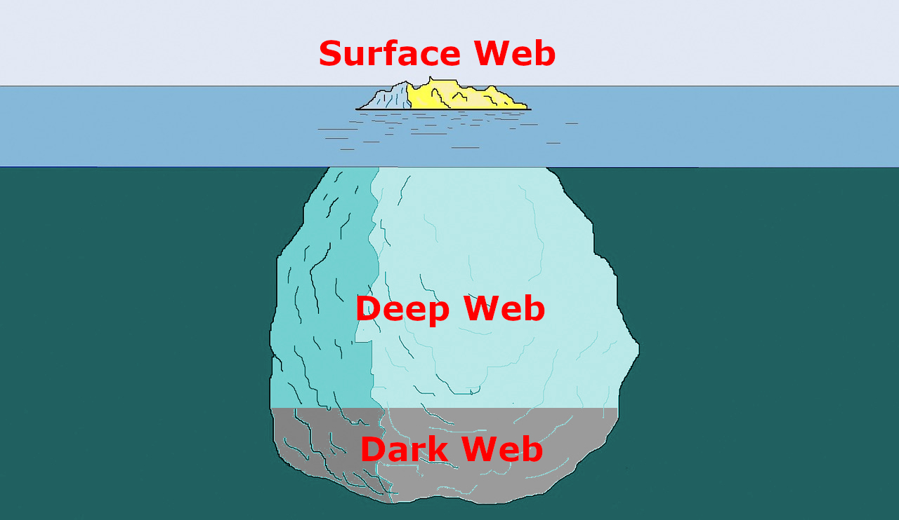
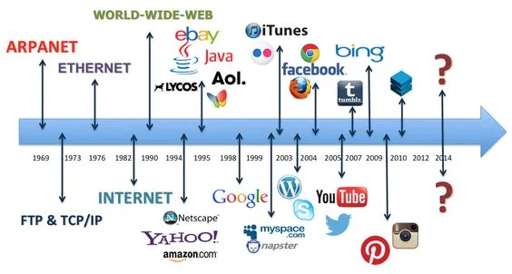

O Primeiro computador eletrônico programável
09 de Abril 2024

O ENIAC (Electronic Numerical Integrator and Computer) é um dos marcos fundamentais na história da computação e da tecnologia digital. Este gigantesco e pioneiro computador eletrônico, que foi desenvolvido durante a Segunda Guerra Mundial, inaugurou uma nova era na computação e abriu caminho para as modernas tecnologias digitais que dominam o mundo contemporâneo. Neste artigo, vamos explorar a história, o funcionamento e o impacto do ENIAC.
Leia Mais...
Qual a diferença entre dark web e deep web ?
16 de Abril 2024

A deep web e a dark web são frequentemente confundidas, mas representam conceitos distintos no universo da internet. Vamos esclarecer as diferenças entre elas:
Deep Web:
Definição: A deep web, ou "web profunda", refere-se a partes da internet que não são indexadas pelos motores de busca padrão, como o Google, Bing ou Yahoo. Isso significa que essas páginas não são facilmente acessíveis através de uma pesquisa comum na web.
Conteúdo: A deep web inclui uma ampla variedade de conteúdos, como bancos de dados acadêmicos, páginas protegidas por senha, sistemas de intranet corporativos, arquivos privados armazenados na nuvem, e-mails protegidos por senha, entre outros. Em resumo, é qualquer conteúdo online que não está acessível diretamente através de uma pesquisa convencional na web.
Acesso: Embora a deep web possa conter informações sensíveis e valiosas, a maioria do seu conteúdo não é ilegal ou malicioso. Muitas vezes, o acesso à deep web requer credenciais específicas, como nome de usuário e senha, ou a utilização de software específico para acessar redes privadas.
Leia Mais...
Vírus Trojan: O que é, tipos, danos
23 de Abril 2024

Um vírus Trojan, ou simplesmente Trojan, é um tipo de malware que se disfarça de software legítimo para enganar os usuários e infectar seus sistemas. O nome "Trojan" é derivado do famoso Cavalo de Troia da mitologia grega, que foi um estratagema usado pelos gregos para invadir a cidade de Troia. Da mesma forma, os Trojans de computador se disfarçam como algo benigno ou útil para enganar os usuários.
Leia Mais...
Você sabe? A história da internet
30 de Abril 2024

Década de 1960: Os primórdios da internet remontam ao final da década de 1960, quando a Agência de Projetos de Pesquisa Avançada (ARPA) dos Estados Unidos desenvolveu a ARPANET. Este foi o primeiro sistema de comutação de pacotes, que permitiu a comunicação entre computadores.
Leia Mais...
O que é DoS e DDoS ?
07 de Maio 2024

DoS (Denial of Service) e DDoS (Distributed Denial of Service) são tipos de ataques cibernéticos projetados para sobrecarregar um servidor, rede ou sistema de computador, tornando-o inacessível para usuários legítimos. Embora ambos tenham o mesmo objetivo principal, há diferenças significativas entre eles:
Leia Mais...